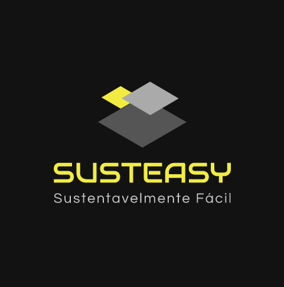

Susteasy um site criado por alunos do ensino médio com o intuito de cumprir um objetivo da
agenda da ONU para 2030, a agricultura sustentável, o nosso site ira te ajudar na sua plantação
fazendo algumas contas como o numero de sementes por hectar em KG,
plantas por metro linear e etc. O Susteasy fará com que você agricultor
tenha uma facilidade para plantar qualquer vegetal, fruta na sua plantação.